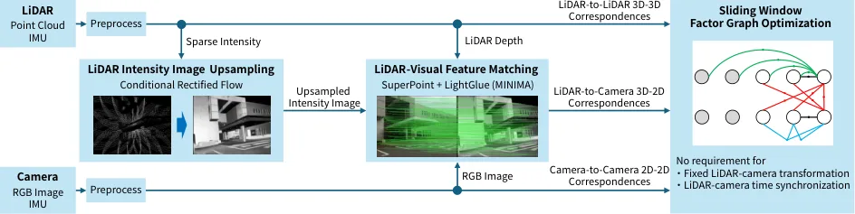
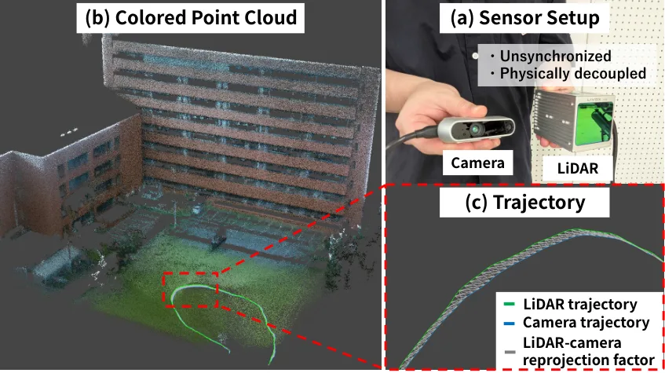
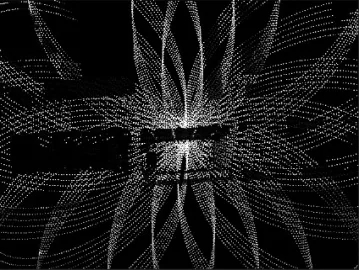
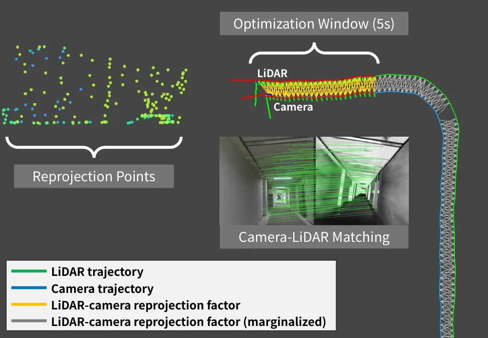
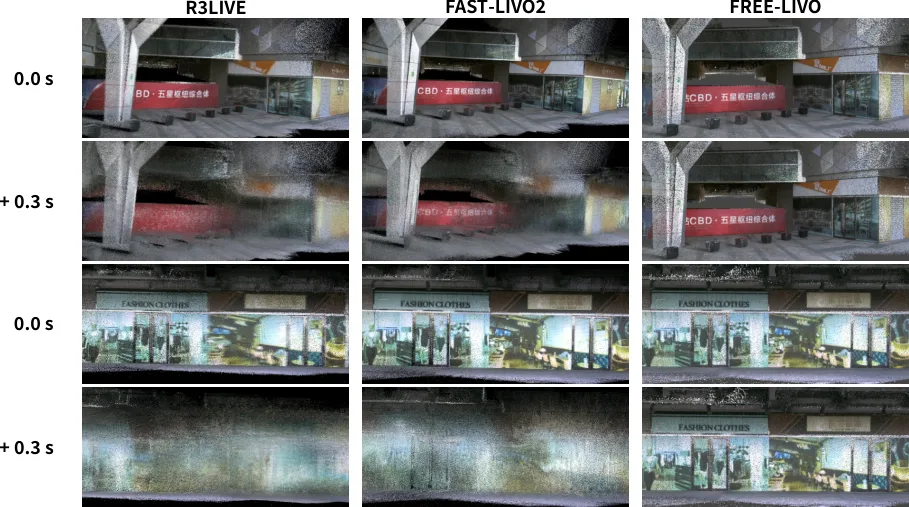
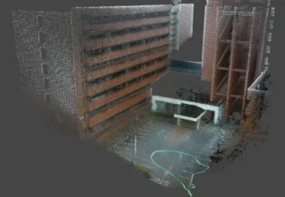

FREE-LIVO：物理分离但仍紧耦合的激光-惯性-视觉里程计
FREE-LIVO: Physically Decoupled Yet Tightly Coupled LiDAR-Inertial-Visual Odometry
前端把一帧激光扫描上采样成稠密强度图（Conditional Rectified Flow 生成模型），与相机图像做特征匹配得到 2D-3D 对应；后端为每个传感器各建一套 IMU 因子，加上激光点云配准因子、视觉跟踪因子与跨模态重投影因子，统一进一个因子图，从而允许激光与相机有各自的位姿与时间基准。M3DGR 六条序列平均 ATE 0.45 m（GLIM 0.71 m），不加外参；松耦合版本 2.10 m、把生成上采样换成最近邻插值 0.52 m；相机加 0.1/0.3/0.5 s 延迟时轨迹仍稳定，彩色点云仍对齐；双臂持激光与相机、以及两台机器人分开运动的演示都能跑。
average ATE on M3DGR
time offset tolerance
loosely coupled ATE
ATE with NN upsampling
作者、单位与技术谱系 · Research context
作者与单位
研究脉络
- GLIM（Koide et al., 2024）方法基座关系：提供本文使用的 LIO 模块与因子图/体素地图基础；实验中 GLIM 作为 LIO 基线（0.71 m）。[论文 §IV-A 与 §IV-B]
- FAST-LIVO2（2024）对比基线关系：主流紧耦合 LIVO，需要外参与同步；本文用它在公平/不公平条件下的表现说明假设的代价。[论文 §IV-A、§IV-B]
- 生成式激光强度上采样上游工作关系：用 Conditional Rectified Flow 把稀疏激光扫描变成稠密强度图，是跨模态匹配的前置条件。[论文 §III-B、§IV-D]
合作网络
- 丰桥技术科学大学–AIST 合作Toyohashi University of Technology → AIST关系：论文共同署名[论文首页署名]
- FREE-LIVO 与 GLIMFREE-LIVO → GLIM关系：LIO 模块技术依赖[论文 §IV-A]
- FREE-LIVO 与 M3DGRFREE-LIVO → M3DGR 数据集关系：评测数据依赖[论文 §IV-A]
作者与单位来自论文首页脚注；谱系与依赖关系依据论文正文；未发现公开材料说明作者之间的师生关系。
方法本质拆解 · What actually changed
不训练新网络，用现成组件
生成式强度图上采样模型与图像特征匹配器都是预训练模型，论文没有在本任务上重新训练它们；系统层面是纯优化后端。因此它的贡献是问题建模与因子图结构，而不是端到端学习。
约束是跨模态重投影与各传感器 IMU
每个激光点-像素对给出一个重投影因子，直接约束两个不同时刻的位姿；激光与相机各自的 IMU 预积分提供短时运动约束，点云配准与视觉跟踪提供各自的主约束。外参与时间偏移不再是常量，而是由这些因子共同约束的变量。
单图联合优化，无分步融合
推理是滑动因子图优化：前端出对应，后端把所有因子一起解，不存在“先 LIO 再 VIO 再对齐”的分步流程。松耦合版本（2.10 m）正是分步融合的对照，说明联合求解在这个任务上明显更好。
把标定问题变成状态估计问题
方法没有提高任何单个传感器的精度，而是把“传感器之间怎么对上”从离线标定搬到在线估计：跨模态对应提供观测量，因子图负责分配误差。它没有做的是学习式外参回归，也没有处理镜头与激光视场长期不重叠的情况——那时对应会枯竭，因子图退化回各自里程计。
输入 = 激光扫描 + 相机图像 + 各自 IMU；改变的位置 = 用生成上采样的强度图做跨模态匹配，并在同一个因子图里估计两套位姿；约束/动作 = 重投影因子 + 各自 IMU 预积分；直接效果 = 无外参 0.45 m ATE，0.5 s 偏差下仍稳定。

桥接价值Bridge
桥接价值
我们做多传感器融合时，外参标定与时间同步是两个永远在“工程细节”里吃掉精度的环节；这篇把二者从前提变成待估状态，等于把标定误差纳入估计，而不是让它在残差里发酵。它连接的是传统紧耦合 LIVO 与“免标定/免同步”的异构系统：激光提供几何、相机提供外观、IMU 提供短时运动，跨模态对应负责把两条轨迹绑在一起。对模块化机器人、手持设备、多机协同这些场景，这是一条可直接落地的折中路线。
方法与模块Method
方法摘要
前端用 Conditional Rectified Flow 生成模型把一帧稀疏激光扫描上采样成稠密强度图，再与相机图像做特征匹配，得到三维激光点与像素的对应；每个对应构造一个重投影因子，直接约束激光位姿与相机位姿（两者可在不同时刻、不同坐标系）。后端把激光点云配准因子、视觉特征跟踪因子、以及激光与相机各自的 IMU 预积分因子放进同一个因子图联合优化，于是“外参”和“时间偏移”不再是常量，而是被观测约束的变量。整个系统仍是紧耦合：原始观测进同一个图，而不是先各跑 LIO/VIO 再融合。
可迁移模块
第一个模块是“单帧激光 → 稠密强度图 → 特征匹配”的跨模态前端：它把激光与相机的数据形态拉齐，使任何现成的图像匹配器都能用，适合我们快速搭异构传感器原型。第二个模块是“每传感器独立 IMU 因子 + 跨模态重投影因子”的图结构：当两个传感器不在同一刚体上时，这套结构天然支持各自的状态块与时间基准。第三个是可复用的评测方式：用同一数据集对比“给外参/不给外参”“加 0.1/0.3/0.5 s 延迟”的 ATE，能直接量化标定与同步误差的代价。

证据Evidence
关键证据与数字
M3DGR 六条序列（Outdoor01/04、Dynamic01–04）平均 ATE RMSE：FREE-LIVO 0.45 m，作为其 LIO 模块的 GLIM 为 0.71 m，且 FREE-LIVO 不使用激光-相机外参；松耦合版本退化到 2.10 m，说明紧耦合必要；把生成上采样换成最近邻插值后为 0.52 m，说明生成模型带来约 0.07 m 的增益但在该数据集上并非决定性。鲁棒性实验给相机加 0.1/0.3/0.5 s 延迟，轨迹保持稳定、彩色点云仍与几何对齐；FAST-LIVO2 在 Dynamic01/02 两条窄室内序列上直接失败（正文以剑标标注），作者归因于 M3DGR 的软件级同步与外参误差。
边界与下一步Limits & Next Step
边界与风险
真值只在 M3DGR 六条序列上，自采的 FAST-LIVO2 数据集与双臂/双机演示都没有真值，只能定性看彩色点云是否对齐，因此“分开运动也能估”目前是可行性演示而非精度结论。方法依赖生成式强度图上采样：在纹理弱、反射强或激光点极稀的场景，上采样图可能与真实外观差异大，匹配器会给出错误对应；论文只在 M3DGR 上比较了生成上采样与最近邻（0.52 m），没有在更恶劣场景验证。另一个风险是因子图规模：每个传感器独立 IMU 因子会显著增加状态量，长序列实时性需要看具体实现，正文没有给运行时间。
下一步实验
可以先用我们现有的激光+相机+IMU 数据复现“给外参 vs 不给外参”的对照，把外参人为扰动 1–5 cm/0.5–2° 看 ATE 曲线，验证“把外参当状态估”在什么扰动区间开始占优。第二步做时间偏移扫描（0/50/100/200/500 ms），同时记录彩色点云的边界对齐误差，建立“同步误差—几何误差”的经验曲线。第三步把该因子图接到我们已有的 LIO 后端上，只替换跨模态因子，评估对现有系统的最小改动成本；若实时性吃紧，可以先把跨模态因子降频（例如每 5 帧一次）看精度损失。







